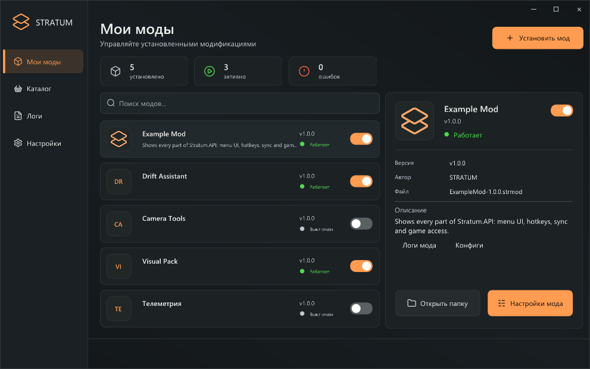
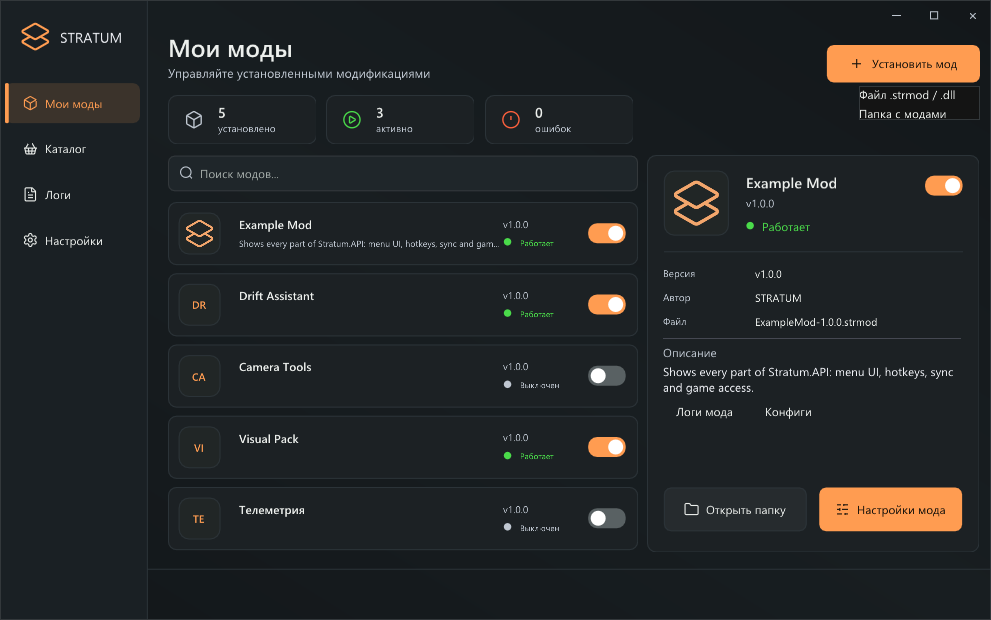
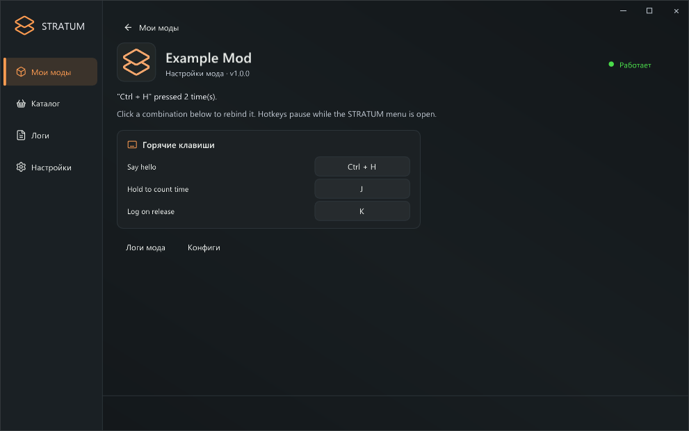
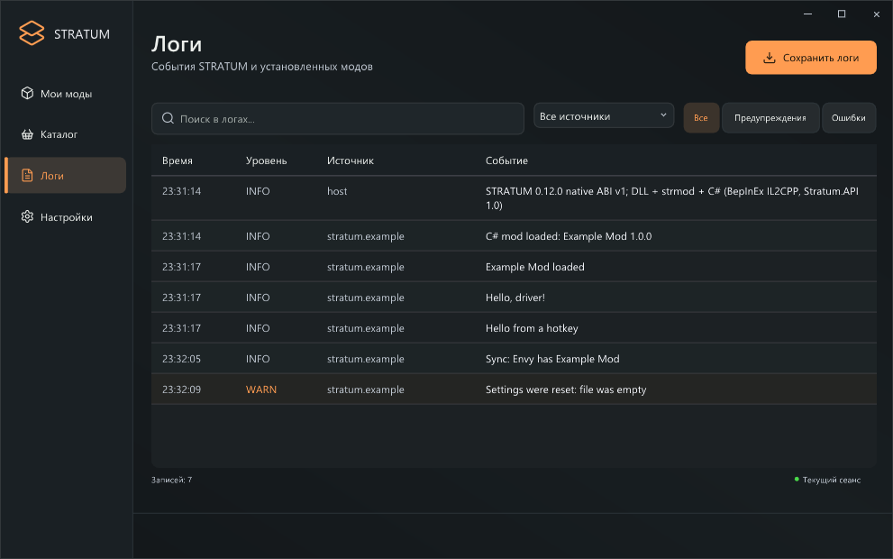
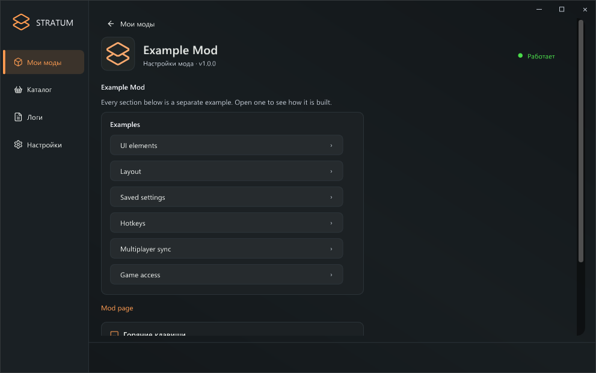
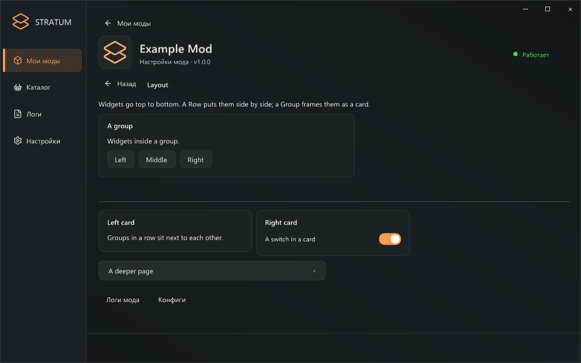
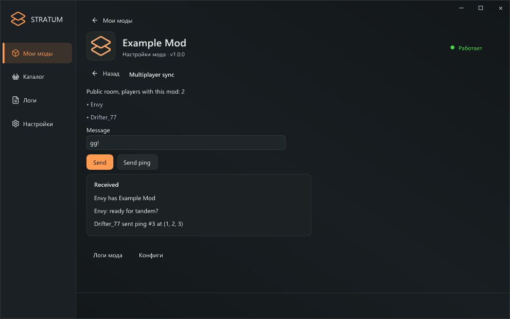

Содержание
STRATUM — загрузчик модов для CarX Drift Racing Online 2 (Windows x64). Меню открывается прямо в игре клавишей Insert. Stratum SDK — набор для создания модов на C#: библиотека Stratum.API, упаковщик, шаблон и большой пример.
Часть 1. Для игроков
Установка STRATUM
- Закройте игру.
- Скопируйте winhttp.dll из архива STRATUM в папку игры — туда, где лежит
CarX Drift Racing Online 2.exe. Обычно этоC:\Program Files (x86)\Steam\steamapps\common\CarX Drift Racing Online 2. Быстрый путь: Steam → ПКМ по игре → Управление → Просмотреть локальные файлы. - Для модов на C# один раз установите бесплатный Microsoft .NET 8 Runtime (x64) — раздел «.NET Runtime», Windows x64. Без него работают только нативные моды, а у C#-модов в меню будет подсказка.
- Запустите игру через Steam. При первом запуске рядом с игрой появится папка STRATUM.
Меню STRATUM
Нажмите Insert в игре. Ещё раз Insert — меню закроется.

- Мои моды — список установленных модов. Справа — подробности о выбранном моде.
- Переключатель справа в строке мода включает и выключает его.
- Логи — события загрузчика и модов.
- Настройки — масштаб интерфейса, язык, анимации, автозапуск новых модов.
Установка модов
Есть два способа.
Через меню. Нажмите «Установить мод» и выберите:
- «Файл .strmod / .dll» — один мод;
- «Папка с модами» — папку мода или целую папку
BepInExот старой установки: еёpluginsстанут модами, аconfigперенесётся вSTRATUM\Configs\Legacy.

Вручную. Положите файл .strmod или .dll (или папку мода) в STRATUM\Mods при закрытой игре.
Какие моды поддерживаются:
| Тип | Пример | Нужно |
|---|---|---|
Моды Stratum SDK (.strmod или .dll) | Example Mod | .NET 8 |
| Моды BepInEx 6 IL2CPP | NeXT, XMetrics, KEF TV | .NET 8 |
| Нативные моды (C++ / C# Native AOT) | HelloNative | — |
Моды для BepInEx 5 / Mono не поддерживаются: в CarX DRO2 нет Mono.
Настройки мода и горячие клавиши
Выберите мод и нажмите «Настройки мода». Здесь мод показывает свою страницу. Внизу — его горячие клавиши: нажмите на комбинацию и затем новые клавиши. Esc — отмена, Backspace — убрать клавишу, кнопка со стрелкой — вернуть по умолчанию.

Горячие клавиши не срабатывают, пока открыто меню STRATUM или окно игры не активно.
Логи
Раздел Логи показывает, что происходит. Фильтр «Все источники» выбирает конкретный мод, кнопки справа оставляют только предупреждения или ошибки. «Сохранить логи» копирует их в файл — пригодится, чтобы отправить автору мода.

Где лежат файлы
<папка игры>\
├── winhttp.dll ← STRATUM
└── STRATUM\
├── Mods\ ← моды
├── Configs\ ← настройки STRATUM и модов
│ ├── <id мода>\ ← папка настроек мода Stratum SDK
│ └── Legacy\ ← конфиги модов BepInEx
└── Logs\ ← loader.log, mods.log, compatibility.logЧасть 2. Для мододелов
Stratum.API устроен похоже на KSL SDK: вы пишете обычную C#-библиотеку, наследуете класс мода и получаете готовые сервисы — лог, страницу в меню, горячие клавиши и обмен сообщениями между игроками. К самой игре (Unity и классам CarX) есть прямой доступ, как в модах BepInEx IL2CPP.
1. Что нужно установить
- .NET 8 SDK (или новее) — для сборки.
- Редактор: Visual Studio 2022, JetBrains Rider или VS Code с расширением C# Dev Kit.
- Установленная игра со STRATUM 0.12+ — из неё берутся ссылки на классы игры.
2. Что внутри SDK
STRATUM-SDK-1.0.0\
├── API\
│ ├── Stratum.API.dll ← библиотека, на которую ссылается мод
│ └── Stratum.API.xml ← подсказки к API для IDE
├── tools\
│ ├── Get-GameReferences.ps1 ← достаёт ссылки на классы игры из STRATUM
│ ├── Build-Mod.ps1 ← собирает мод и упаковывает в .strmod
│ └── stratum-pack.exe ← упаковщик .strmod
├── template\MyMod\ ← минимальный проект — начинайте с него
├── examples\
│ ├── ExampleMod\ ← большой пример всех возможностей
│ └── prebuilt\ExampleMod-1.0.0.strmod
├── refs\ ← сюда Get-GameReferences.ps1 кладёт ссылки на игру
└── docs\ ← это руководство3. Первый мод за 5 минут
Шаг 1. Ссылки на игру. Откройте PowerShell в папке SDK и выполните (путь — ваша папка игры):
.\tools\Get-GameReferences.ps1 -Game "C:\Program Files (x86)\Steam\steamapps\common\CarX Drift Racing Online 2"В папке refs появятся ~285 сборок: Unity, CarX, Il2CppInterop, HarmonyX. Повторите после обновления игры или STRATUM.
Шаг 2. Копия шаблона. Скопируйте template\MyMod рядом, например в template\DriftTimer. Переименуйте MyMod.csproj и поменяйте в нём AssemblyName.
Шаг 3. Описание мода. В MyMod.cs поменяйте атрибут, а в manifest.ini — те же поля:
[StratumMod("myname.drifttimer", "Drift Timer", "1.0.0", Author = "MyName", Description = "Таймер дрифта")]
public sealed class DriftTimer : StratumMod
{
public override void OnLoad() => Log.Info("Drift Timer loaded");
}id=myname.drifttimer
name=Drift Timer
version=1.0.0
author=MyName
description=Таймер дрифтаПравила для id: только строчные латинские буквы, цифры, ., _, -. Удобно так: ник.мод. Не меняйте id после выпуска — по нему сохраняются настройки и работает Sync.
Шаг 4. Сборка.
.\tools\Build-Mod.ps1 -Project .\template\DriftTimerГотовый файл — template\DriftTimer\dist\DriftTimer-1.0.0.strmod.
Шаг 5. Установка. Закройте игру, положите .strmod в STRATUM\Mods (или установите через меню), запустите игру. В разделе Логи появится «Drift Timer loaded».
4. Как устроен мод
Мод — это класс, унаследованный от StratumMod и помеченный [StratumMod]. STRATUM создаёт один его экземпляр и вызывает методы:
| Метод | Когда вызывается |
|---|---|
OnLoad() | один раз, когда игра запущена |
OnUpdate(float deltaTime) | каждый кадр |
OnDrawUI() | пока у игрока открыта страница мода в меню (около 30 раз в секунду) |
OnQuit() | при закрытии игры — сохраните несохранённое |
GetIcon() | один раз при загрузке — PNG-логотип или null |
Все методы выполняются в главном потоке Unity. Поэтому из любого из них можно спокойно работать с объектами игры — в том числе из кода страницы в меню.
Что доступно внутри класса мода:
| Свойство | Что это |
|---|---|
Log | запись в лог STRATUM (Info, Warning, Error) |
UI | элементы страницы мода |
Input | горячие клавиши |
Sync | сообщения между игроками |
ConfigDirectory | личная папка мода STRATUM\Configs\<id> |
Id, Name, Version | данные из атрибута |
Если OnLoad или OnUpdate выбросит исключение, STRATUM остановит мод, запишет ошибку в лог и покажет её в меню — игра продолжит работать.
5. Страница мода в меню (UI)
UI работает в стиле immediate mode, как в KSL: каждый раз в OnDrawUI вы заново описываете страницу, а интерактивные элементы возвращают true, когда игрок ими воспользовался.
bool enabled = true;
float power = 0.5f;
public override void OnDrawUI()
{
UI.Header("Настройки");
if (UI.Toggle("Включить", ref enabled)) Log.Info("Включено: " + enabled);
UI.Slider("Сила", ref power, 0, 1, step: 0.05f);
if (UI.Button("Сбросить", primary: true)) power = 0.5f;
}Меню рисует элементы в своём стиле — моду не нужно ничего настраивать.

Все элементы
| Метод | Что делает |
|---|---|
Label(text) | обычный текст с переносом |
Header(text) | жирный заголовок раздела |
Hint(text) | серый поясняющий текст |
Separator() | тонкая линия |
Space(height) | пустой отступ |
Button(label, tooltip, primary) | кнопка → true после нажатия; primary: true — оранжевая |
Toggle(label, ref bool, tooltip) | переключатель → true, если изменился |
Slider(label, ref float, min, max, step) | ползунок для дробных |
Slider(label, ref int, min, max) | ползунок для целых |
Input(label, ref string, maxLength, hint) | поле ввода |
Dropdown(label, ref int index, options) | выпадающий список |
Progress(label, fraction) | полоса прогресса (0…1) |
Link(text, url) | ссылка, открывается в браузере (только http/https) |
PageButton(label, draw, title) | кнопка, открывающая вложенную страницу |
Back() | вернуться на предыдущую страницу |
using (UI.Row()) | элементы внутри — в одну строку |
using (UI.Group("Заголовок")) | элементы внутри — в карточке |
Строки, карточки и вложенные страницы
using (UI.Group("Камера"))
{
using (UI.Row())
{
if (UI.Button("Ближе")) distance -= 1;
if (UI.Button("Дальше")) distance += 1;
}
}
UI.PageButton("Дополнительно", DrawAdvanced, "Дополнительные настройки");
void DrawAdvanced()
{
UI.Label("Вложенная страница. Кнопка «Назад» появляется сама.");
}
Важно знать
- Подписи — это id элементов. Если на странице две кнопки «Удалить», они различаются по порядку. Чтобы id не зависел от порядка, добавьте скрытый суффикс:
UI.Button("Удалить##slot2")— после##текст не показывается. - Значения храните в полях класса. Метод
Toggle(ref value)меняет вашу переменную, поэтому её нужно держать между кадрами. - Задержка — один кадр. Нажатие приходит моду в следующем вызове
OnDrawUI. Это незаметно для игрока. - Код страницы работает только пока она открыта. Логику, которая должна работать всегда, держите в
OnUpdate.
6. Горячие клавиши
Зарегистрируйте клавиши в OnLoad. Игрок увидит их на странице мода и сможет переназначить — выбор сохраняется сам (STRATUM\Configs\<id>\hotkeys.cfg).
public override void OnLoad()
{
// Нажатие: один раз. По умолчанию Ctrl + H.
Input.Bind("hello", "Поздороваться", () => Log.Info("Привет!"), Key.LeftCtrl, Key.H);
// Удержание: каждый кадр, пока клавиша зажата.
Input.Bind("boost", "Ускорение", () => Boost(), HotkeyMode.Hold, Key.LeftShift, Key.B);
// Отпускание: один раз, когда клавиши отпущены.
Input.Bind("photo", "Скриншот", () => TakePhoto(), HotkeyMode.Release, Key.F9);
}
public override void OnDrawUI()
{
UI.Hint("Ускорение: " + Input.Describe("boost")); // "Shift + B" или то, что выбрал игрок
}idхоткея — латиница, цифры,.,_,-. По нему сохраняется выбор игрока.- Комбинация — до трёх модификаторов (Ctrl, Shift, Alt) и одна клавиша. Сравнение точное: хоткей
Hне сработает наCtrl + H. Input.IsHeld("id")— зажата ли комбинация сейчас.- Хоткеи не срабатывают, пока открыто меню STRATUM и когда игра не в фокусе.
7. Мультиплеер (Sync)
Sync передаёт сообщения игрокам в той же онлайн-комнате, у которых установлен этот же мод. Остальные ничего не получают и не видят.
public override void OnLoad()
{
// Текст
Sync.On("chat", m => Log.Info(m.Sender.Name + ": " + m.Text));
// Упакованные значения: читать в том же порядке, что и писали
Sync.On("score", m =>
{
var r = m.Read();
int points = r.ReadInt();
float angle = r.ReadFloat();
Log.Info($"{m.Sender.Name}: {points} очков, угол {angle:0}°");
});
Sync.PlayerJoined += p => Log.Info(p.Name + " тоже с модом");
Sync.PlayerLeft += p => Log.Info(p.Name + " ушёл");
}
void SendScore(int points, float angle)
{
if (Sync.IsAvailable)
Sync.Send("score", new SyncWriter().Write(points).Write(angle));
}
Как это работает. Сообщения идут через сервер игры (SmartFox) — тем же каналом, которым CarX передаёт состояние игроков. Отдельный сервер не нужен.
Ограничения — прочитайте обязательно:
| Задержка | обычно 0,5–5 секунд |
| Частота | сообщения копятся и отправляются пачкой раз в 0,5 с |
| Размер | сообщение ≤ 512 байт, пачка за 0,5 с ≤ 1536 байт (Send вернёт false, если больше) |
| Надёжность | если игрок пропустил пачку (например, только что зашёл), она потеряна |
| Подходит | события, общее состояние, готовность, счёт, настройки |
| Не подходит | данные каждого кадра, позиции в реальном времени |
Важное состояние периодически отправляйте заново или по событию PlayerJoined. Sync.Players — список игроков с модом, Sync.IsPrivateRoom — зашли ли вы в комнату с паролем.
8. Доступ к игре
Классы игры подключаются как обычные ссылки из папки refs. Шаблон уже подключает UnityEngine.CoreModule, Il2CppInterop.Runtime и Il2Cppmscorlib; другие сборки добавляйте так же:
<Reference Include="CarX.DR3.Assembly">
<HintPath>$(StratumSdk)\refs\CarX.DR3.Assembly.dll</HintPath>
<Private>false</Private>
</Reference>Private=false обязателен: STRATUM сам предоставляет эти сборки, класть их в мод нельзя.
using UnityEngine;
using UnityEngine.SceneManagement;
var scene = SceneManager.GetActiveScene().name;
var camera = Camera.main;
if (camera != null) camera.fieldOfView = 80;Работа с классами игры устроена так же, как в модах BepInEx IL2CPP (Il2CppInterop): TryCast<T>(), коллекции Il2CppSystem.* и т. д. Библиотека HarmonyX (0Harmony.dll в refs) тоже доступна.
9. Сохранение настроек
У каждого мода есть своя папка — ConfigDirectory (STRATUM\Configs\<id>). Храните там что угодно, например JSON:
using System.Text.Json;
class Settings { public bool Enabled = true; public float Power = 0.5f; }
Settings settings = new();
string SettingsPath => Path.Combine(ConfigDirectory, "settings.json");
static readonly JsonSerializerOptions Json = new() { IncludeFields = true, WriteIndented = true };
public override void OnLoad()
{
if (File.Exists(SettingsPath))
settings = JsonSerializer.Deserialize<Settings>(File.ReadAllText(SettingsPath), Json) ?? new();
}
void Save() => File.WriteAllText(SettingsPath, JsonSerializer.Serialize(settings, Json));
public override void OnDrawUI()
{
if (UI.Toggle("Включить", ref settings.Enabled)) Save();
}Полный вариант — examples\ExampleMod\Settings.cs.
10. Логотип мода
- В .strmod: положите
icon.pngрядом с проектом —Build-Mod.ps1упакует его сам. Квадратная PNG, лучше 256×256 или 512×512. - В .dll: добавьте PNG как ресурс и верните его из
GetIcon():
<EmbeddedResource Include="icon.png" LogicalName="MyMod.icon.png" />public override byte[]? GetIcon() => LoadEmbeddedResource("MyMod.icon.png");Без логотипа меню показывает первые буквы названия.
11. Упаковка в .strmod
.strmod — один файл: DLL мода + manifest.ini + логотип + контрольная сумма.
manifest.ini:
| Поле | Обязательно | Пример |
|---|---|---|
id | да | myname.drifttimer — должен совпадать с id в [StratumMod] |
name | да | Drift Timer |
version | да | 1.2.0 (major.minor.patch) |
author | нет | MyName |
description | нет | одна строка |
Вручную (то же, что делает Build-Mod.ps1):
.\tools\stratum-pack.exe pack bin\Release\net8.0\DriftTimer.dll manifest.ini icon.png DriftTimer-1.0.0.strmod
.\tools\stratum-pack.exe inspect DriftTimer-1.0.0.strmodinspect покажет данные пакета и abi=2 (C# Stratum.API). Упаковщик сам определяет тип DLL, так что нативные моды (C++ / Native AOT) он пакует тоже.
12. Отладка и частые ошибки
Смотрите Логи в меню (фильтр по вашему моду) или файлы в STRATUM\Logs:
mods.log— сообщения модов (Log.Infoи т. п.) и статусы загрузки;compatibility.log— подробности слоя C# (исключения, BepInEx-моды);loader.log— запуск STRATUM.
| Проблема | Причина и решение |
|---|---|
error CS0656 ... NullableAttribute | нет NullableAttributes.cs в проекте — скопируйте его из шаблона |
Не находятся UnityEngine, Camera и т. п. | не выполнен Get-GameReferences.ps1 или не добавлена ссылка в .csproj |
| В меню «Для C#-модов установите .NET 8» | у игрока нет .NET 8 Runtime x64 |
| «Недопустимый id мода» | id содержит заглавные буквы, пробелы или кириллицу |
| «В сборке нет класса, унаследованного от StratumMod» | класс мода абстрактный, не наследует StratumMod или его нет |
| «Класс … без атрибута [StratumMod]» | добавьте атрибут |
| «Мод с id … уже загружен» | установлены две копии мода |
Мод остановлен с ошибкой OnUpdate | исключение в OnUpdate: смотрите стек в логе |
| Изменения не применяются | C#-мод обновляется только после перезапуска игры |
| Хоткей не срабатывает | открыто меню STRATUM, игра не в фокусе или зажат лишний модификатор (сравнение точное) |
Sync.Send возвращает false | вы не в онлайн-комнате, сообщение больше 512 байт или пачка за 0,5 с уже заполнена |
13. Справочник API
Полные описания есть в подсказках IDE (Stratum.API.xml). Кратко:
StratumModAttribute(id, name, version) — Author, Description.
StratumMod — OnLoad(), OnUpdate(float), OnDrawUI(), OnQuit(), GetIcon(); свойства Log, UI, Input, Sync, ConfigDirectory, Id, Name, Version; помощник LoadEmbeddedResource(name).
ModLog — Info(text), Warning(text), Error(text), Error(text, exception).
ModUI — Label, Header, Hint, Separator, Space, Button, Toggle, Slider (float/int), Input, Dropdown, Progress, Link, PageButton, Back, Row(), Group(title), свойство IsOpen.
ModInput — Bind(id, label, callback, mode, keys…), Bind(id, label, callback, keys…), IsHeld(id), Describe(id). Перечисления Key (A–Z, D0–D9, F1–F12, стрелки, Numpad, модификаторы и т. д.) и HotkeyMode (Press, Hold, Release).
ModSync — IsAvailable, IsPrivateRoom, LocalPlayer, Players, события PlayerJoined/PlayerLeft, On(channel, handler), Send(channel, byte[] | string | SyncWriter), константы MaxMessageBytes = 512, MaxWindowBytes = 1536.
SyncMessage — Channel, Sender, Data, Text, Read(). SyncPlayer — Id, Name, IsLocal.
SyncWriter — Write(bool | byte | int | long | float | double | string), Write(x, y, z), Length, ToArray(). SyncReader — ReadBool, ReadByte, ReadInt, ReadLong, ReadFloat, ReadDouble, ReadString, ReadVector, End.
14. Для тех, кто писал под KSL
| KSL | Stratum.API |
|---|---|
[KSLMeta("Name", "1.0.0", "author")] | [StratumMod("author.name", "Name", "1.0.0", Author = "author")] |
BaseMod | StratumMod |
Start() | OnLoad() |
Update() | OnUpdate(float deltaTime) |
OnUIDraw() | OnDrawUI() |
GetIcon() → Texture2D | GetIcon() → PNG byte[] |
Kino.Log.Info | Log.Info |
Kino.UI.Button / Toggle / Slider | UI.Button / Toggle / Slider |
Kino.UI.ContextButton + PushContext | UI.PageButton(label, draw, title) |
Kino.UI.PopContext | UI.Back() |
Kino.UI.BeginHorizontal / EndHorizontal | using (UI.Row()) |
Kino.UI.GroupLabel | UI.Header / using (UI.Group(...)) |
Kino.UI.Hyperlink | UI.Link |
Kino.Input.Bind(keys, action, name, ActionType) | Input.Bind(id, label, action, HotkeyMode, keys…) |
Kino.Sync.TryRegisterPacket + SetCallback | Sync.On(channel, handler) |
Kino.Sync.CreatePacket + SendToAll | Sync.Send(channel, new SyncWriter()...) |
Kino.Prefs / Kino.Config | свой файл в ConfigDirectory (см. раздел 9) |
maykr → .ksm | Build-Mod.ps1 / stratum-pack → .strmod |
Главное отличие: в Stratum.API сервисы — это свойства вашего мода (Log, UI, …), а не глобальный Kino. Во вспомогательные классы передавайте ссылку на мод, как в examples\ExampleMod.